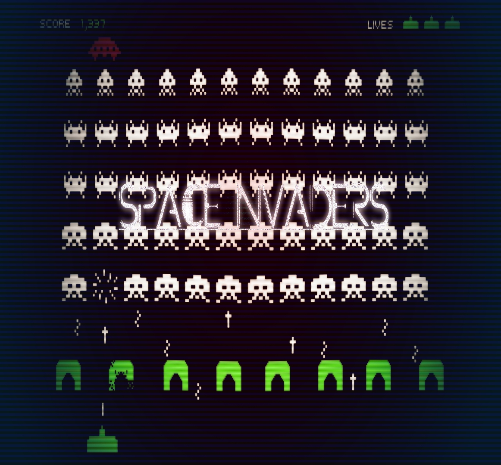
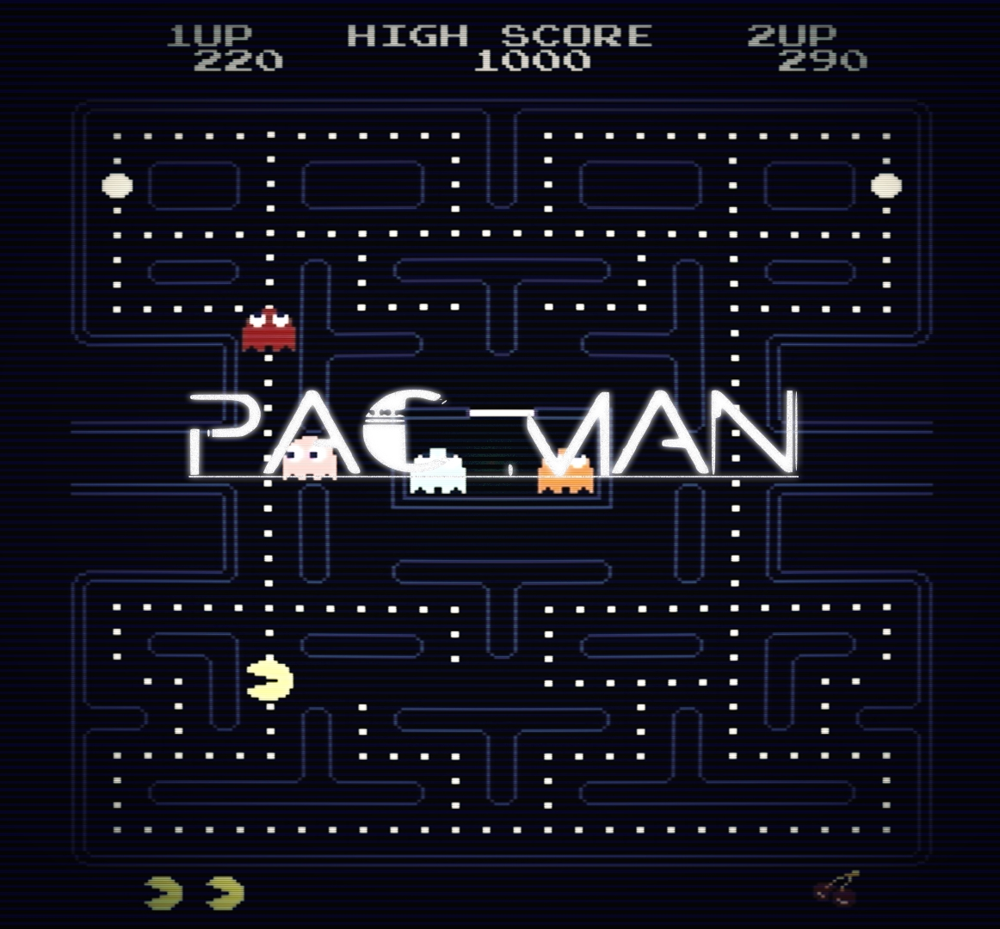
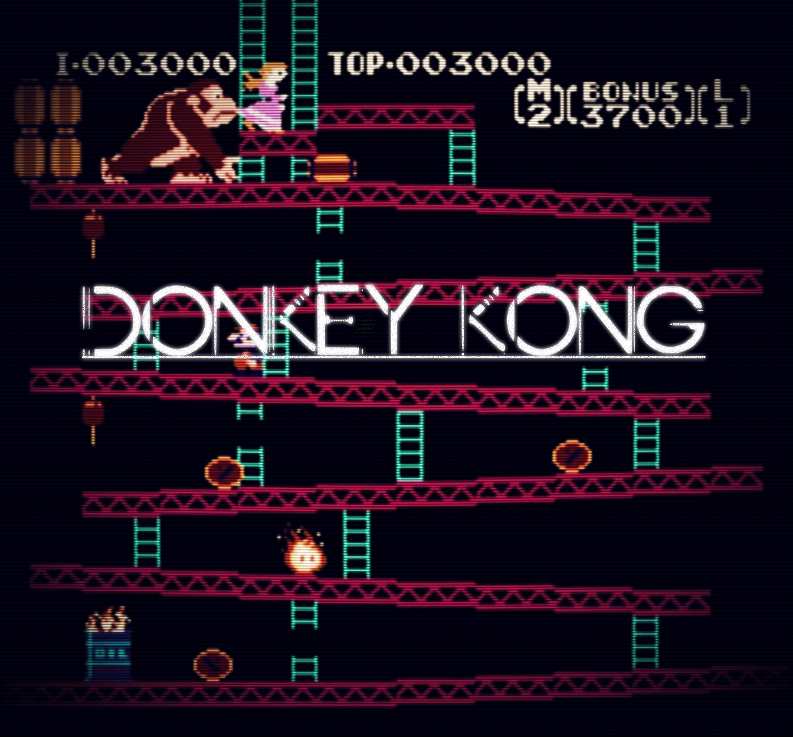
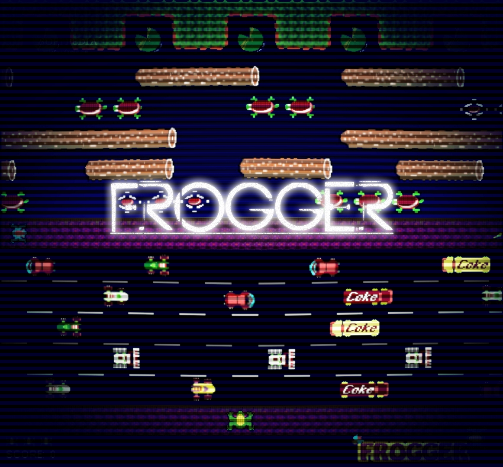

Historical:

Space Invaders
Space Invaders was designed by Tomohiro Nishikado in 1978 and developed by Taito and published in Japan, but then published by Midway in North America, Leisure & Allied Industries in Australia, and both Taito and Midway in Europe.
Space Invaders established the "Shoot 'em up" genre and was the first blockbuster video/ arcade game, it was so popular that it has been featured thoughout pop culture ever since, the space alien ships from it have been seen to represent video games.
Space Invaders also commercially successful with it being estimated as a franchise to have grossed "$13.93 Billion as of 2016".
Sources:
Highest Grossing Games List .
Space Invaders Wikipedia

Pac Man
It was developed and published in Japan by Namco and released on May 21 1980, it was then released on October 25 in North America of the same year after being manufactured and published by Midway.
Pac-Man was designed by Toru Iwatani and was originally called Puck-Man in Japan but changed by Midway to Pac-Man for the United States as they thought the public might make fun of it's name.
Pac-Man is now very well known as part of popular culture and most people that ever played arcade games or play video games will know who Pac-Man is. Pac-Man sold 400,000 arcade machines up to 1982, and up to 1999 made $2.5 billion US, with inflation that would be $7.27 billion US.
Sources: Pac-Man Wikipedia .
Video Game Franchises List

Donkey Kong
Donkey Kong was released by Nintendo and produced by Shigeru Miyamoto on July 9th 1981.
It was one of the most influential arcade games of the golden age, it introduced many new concepts that have been used ever since even in video game genre other than it's own.
It was one of the first platformer games and it started the Mario franchise, named after the main character "Jumpman" that was eventually named "Mario".
The Mario franchise is the best selling video game franchise of all time selling atleast 528.534 million copies, 311.46 million copies coming just from the Super Mario franchise which is also the second biggest best selling video game franchise.
While Pac-Man is arguably the first game to use cutscenes, Donkey Kong introduced the concept of using "cutscenes" to tell a story without player input to "advance the plot" and "intergrate multiple stages into the gameplay".
Cutscenes are now used in almost every single modern video game, and it would be almost impossible to find a modern video game that focuses on the story that doesn't have cutscenes.
Sources:
Donkey Kong Wikipedia .
Video Game Franchises List

Frogger
Frogger was released in 1981, published by Sega and developed by Konami.
Frogger is a classic arcade game that why probably not played by many now, should be recognised by most as many sequels were created after it.
The Frogger franchise has sold about 20 million copies up to 2005 which is about the same as the Total War, Lego Star Wars, Age of Empires and Far Cry franchises.
Sources: Frogger Wikipedia .
Video Game Franchises List